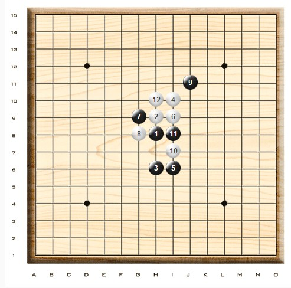
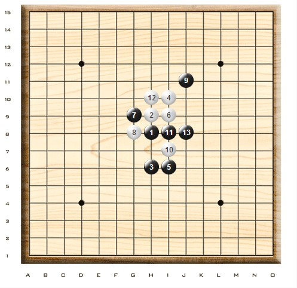
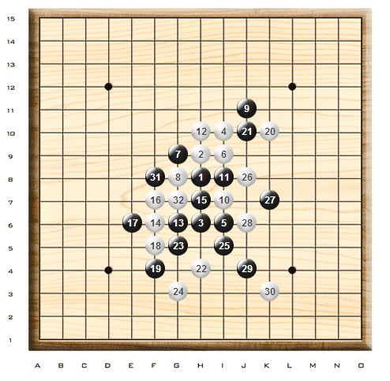
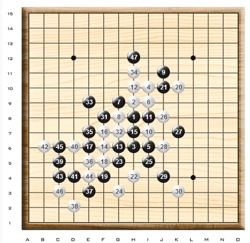
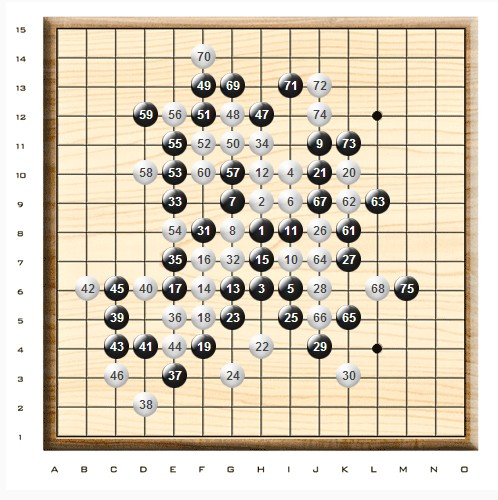

李洪斌 2012全国团体赛第一局自战点评
#1 李洪斌 2012全国团体赛第一局自战点评 作者：漁民 发表时间：2012-10-29 11:27:52
本次有幸参加2012年团体赛和个人赛，首先要感谢协会的大力支持！08年后再次参加全国性的赛事，这段期间由于各种原因棋艺懈怠。加之本次比赛也是临时上阵，从而影响了整队的发挥和成绩。
团体赛第一轮，我所在的上海2队对阵炫飞1队。我坐2台，对手是奚振扬。赛前因为对瑞星和疏星变化很少涉及，因此准备的重点放在了近期较流行的一些常见着手。例如瑞星的团12各路变化，赛前预计对手多数会开瑞星。并且如果我执黑，对手下白团12的可能较大。执黑如何尽量力保不失对我来说的确是个难题。临赛前和队友的研讨中似乎找到了黑棋比较保险的下法，由于时间仓促实战效果如何并没有充分的把握。
实战谱1：奚振扬开局瑞星，我提出交换。至白12双方下的很快，黑13此时分歧点。13-J8的一路变化白棋选择很多，对于此路变化陌生的我来说有些冒险。13-G6是赛前和队友研习过的一路变化，白棋选择较少黑棋可战。
实战谱（1~12）

参考图1：黑13后白14比较常见的选点有K8、G6、J7、J9，此后各点分支变化繁杂。

参考图1
实战谱2：黑13~21一本道。白22的选择不多。实战22、24是流行的下法，25也是此际最常见的一手。实战白26也可以选择单防，实战这样选择后，局面与1台钱坤对阵曹冬一局相同。以下双方至白32时两局依然相同，接下来33-G11点是常见的一手，眼见的好点！

实战谱2（13~32）
实战谱3：黑33并没有选择常见的着点，有两方面考虑。首先，避免继续与一台一样的变化。其次，这步33局部的棋形在之前的研习中有过涉及（右边的交换不同）。但是棋形子力的区别也是明显的，因此略微考虑后还是觉得可以尝试一下。白34强手！此时黑棋是选择单防，还是交换定型必须要做决断。此处我花费不少时间思考，决定按照实战35~46的下法交换，过程中白棋也是必然的对应。黑47回防后，黑棋左边留有种种余味的借用。白棋虽然局部有些先手，但经过计算白棋没用作为。黑棋可以满意。
实战谱3（33~47）
实战谱4：白48~58过程中双防对应必然，黑59、61局面已然安全先手成和。此后继续交换几手，黑75时提和对方同意。此局黑棋若从导入和棋角度来说并无不满，尤其是第33手变招少见有趣。此后在个人赛中与奚振扬再次相遇，已然是我执黑对应白棋团12，虽然白棋变招，但是黑棋主导和棋的局面依然。

实战谱4（48~75）
经过这两局实战或许对于执黑如何对应白12团角，提供了一条较稳妥的思路吧
(转自中华连珠网)
［ 换你一笑 于 2012-10-29 11:33:37 时花20金币送鲜花一朵］
［ 换你一笑 于 2012-10-29 11:33:37 时花20金币送鲜花一朵］
［ 换你一笑 于 2012-10-29 11:33:37 时花20金币送鲜花一朵］
［ 茗弈宽容 于 2012-10-29 11:39:23 时奖励此帖[金币加 100 威望加1］
［ 茗弈宽容 于 2012-10-29 11:45:08 时花20金币送鲜花一朵］
［ 茗弈宽容 于 2012-10-29 11:45:08 时花20金币送鲜花一朵］
［ 茗弈宽容 于 2012-10-29 11:45:08 时花20金币送鲜花一朵］
［ 茗弈宽容 于 2012-10-29 11:45:08 时花20金币送鲜花一朵］
［ 茗弈宽容 于 2012-10-29 11:45:08 时花20金币送鲜花一朵］
［ 茗弈宽容 于 2012-10-29 11:45:08 时花20金币送鲜花一朵］
［ 茗弈宽容 于 2012-10-29 11:45:08 时花20金币送鲜花一朵］
［ 茗弈宽容 于 2012-10-29 11:45:08 时花20金币送鲜花一朵］
［ 茗弈宽容 于 2012-10-29 11:45:08 时花20金币送鲜花一朵］
［ 自来水 于 2012-10-30 9:59:59 时花20金币送鲜花一朵］
［ 自来水 于 2012-10-30 9:59:59 时花20金币送鲜花一朵］
［ 自来水 于 2012-10-30 9:59:59 时花20金币送鲜花一朵］
［ 自来水 于 2012-10-30 9:59:59 时花20金币送鲜花一朵］
［ 自来水 于 2012-10-30 9:59:59 时花20金币送鲜花一朵］
［ 自来水 于 2012-10-30 9:59:59 时花20金币送鲜花一朵］
［ 自来水 于 2012-10-30 9:59:59 时花20金币送鲜花一朵］
［ 自来水 于 2012-10-30 9:59:59 时花20金币送鲜花一朵］
［ 自来水 于 2012-10-30 9:59:59 时花20金币送鲜花一朵］
［ 自来水 于 2012-10-30 9:59:59 时花20金币送鲜花一朵］
［ 冰魔 于 2012-11-1 8:38:36 时花20金币送鲜花一朵］
#2 Re:李洪斌 2012全国团体赛第一局自战点评 作者：茗弈宽容 发表时间：2012-10-29 11:44:38
谢谢分享!看到洪斌老师的文章不禁又想起老师前年出版那本书籍,五子棋基础定式-实战必读.感谢洪斌老师多年为五子做出的贡献!［ 漁民 于 2012-10-29 18:06:02 时花20金币送鲜花一朵］
［ 漁民 于 2012-10-29 18:06:02 时花20金币送鲜花一朵］
［ 漁民 于 2012-10-29 18:06:02 时花20金币送鲜花一朵］
#3 Re:茗弈宽容【==Re:李洪斌 2012全国团体赛第一局自战点评==】 作者：小小亦默 发表时间：2012-10-29 12:40:30
我这里还有这本书啊 仅有的一本叻［ 漁民 于 2012-10-29 18:06:31 时花20金币送鲜花一朵］
#4 Re:李洪斌 2012全国团体赛第一局自战点评 作者：清风明月月 发表时间：2012-10-29 12:59:37
我也有一本李老师的实战必读，很实用，看了有收获的，，，谢谢啦！［ 漁民 于 2012-10-29 18:06:50 时花20金币送鲜花一朵］
#5 Re:李洪斌 2012全国团体赛第一局自战点评 作者：华夏小宝 发表时间：2012-10-29 17:25:07
经详细阅读，实战棋谱已记住。嘿嘿。
［ 漁民 于 2012-10-29 18:07:24 时花20金币送鲜花一朵］
#6 Re:李洪斌 2012全国团体赛第一局自战点评 作者：裁决殿雪月 发表时间：2012-10-30 9:18:04
虽然看不懂，还是支持一下
#7 Re:李洪斌 2012全国团体赛第一局自战点评 作者：回忆一下 发表时间：2012-10-30 18:14:30
顶顶#8 Re:李洪斌 2012全国团体赛第一局自战点评 作者：一三九喝老酒 发表时间：2012-10-31 14:06:34
这个变化好像就是和棋变化吧#9 Re:李洪斌 2012全国团体赛第一局自战点评 作者：茗弈初学者 发表时间：2012-11-6 16:55:19
谢谢大师分享！#10 Re:李洪斌 2012全国团体赛第一局自战点评 作者：掌棋宣传员 发表时间：2012-11-7 21:44:36
一本道 是???#11 Re:李洪斌 2012全国团体赛第一局自战点评 作者：屏蔽 发表时间：2012-11-7 23:37:17
当然的应对